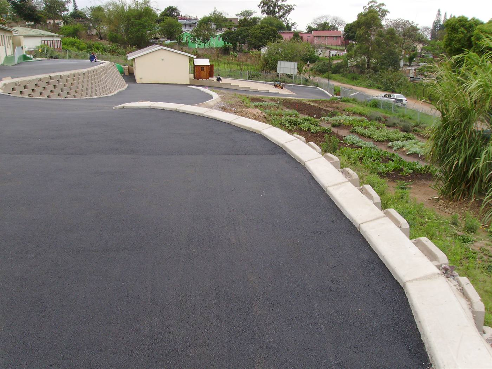
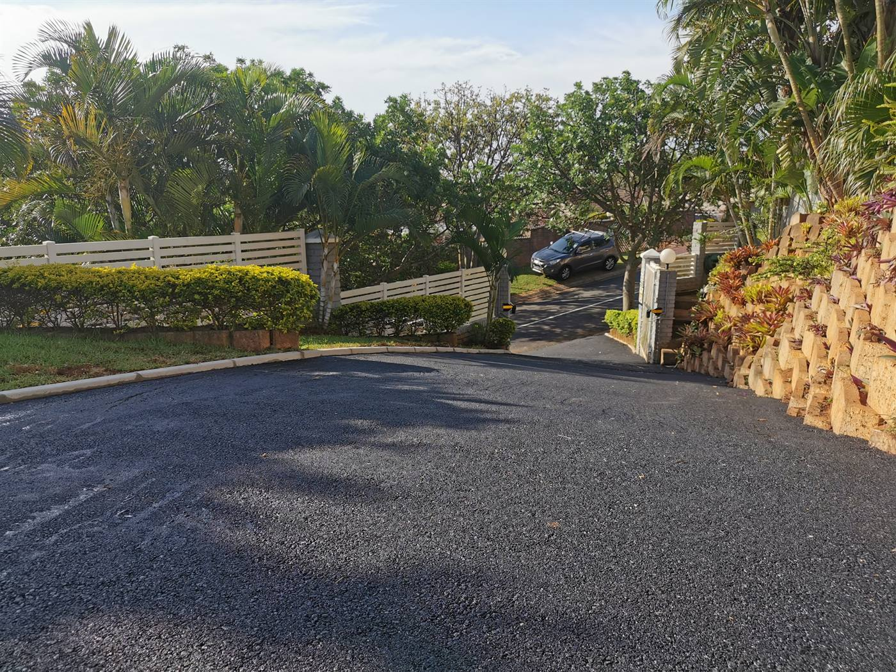
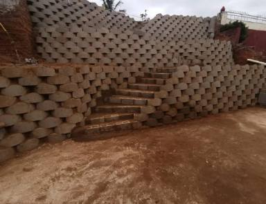
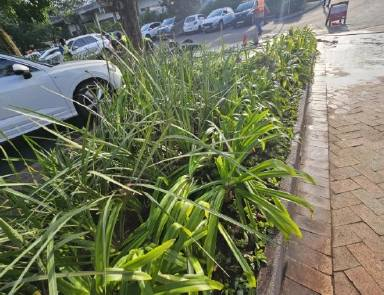
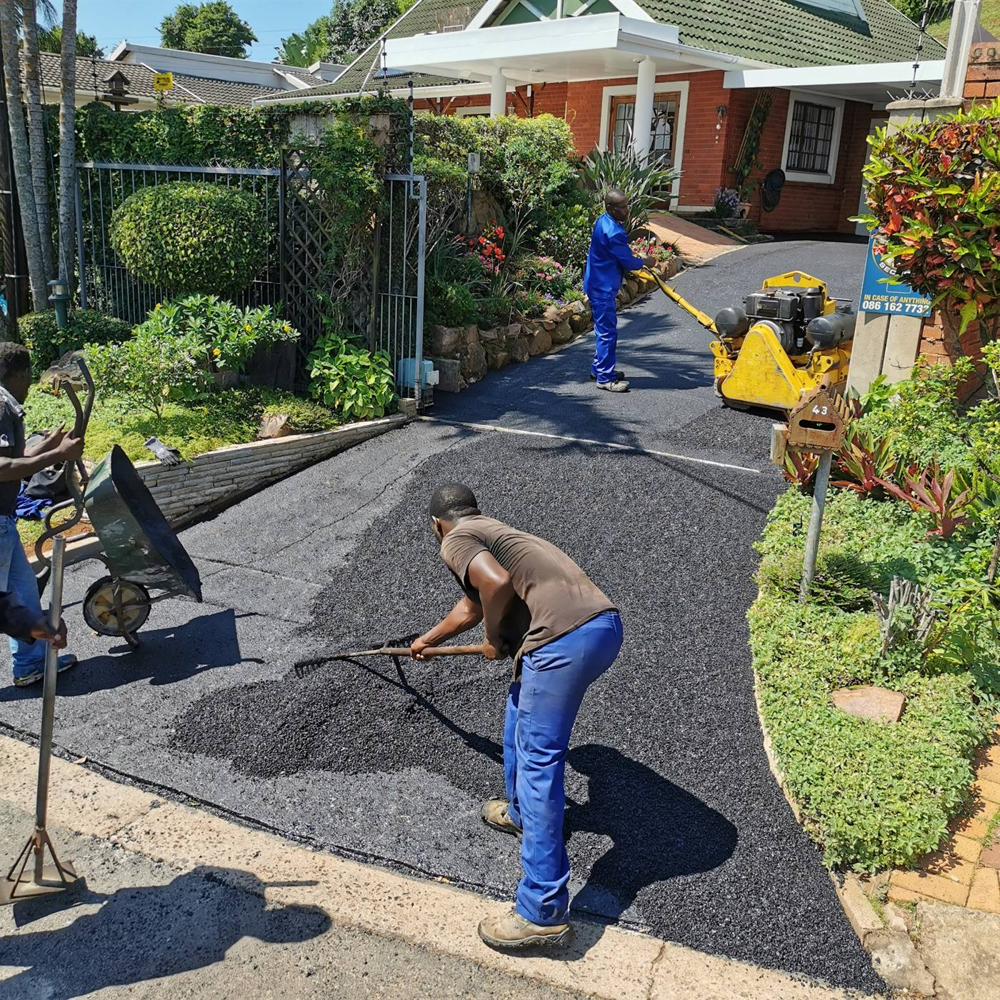

Our Services
From residential driveways to commercial carparks, repairs, paving, drainage and supporting exterior works, SA Asphalt delivers practical solutions across the Durban Metropolitan area.
- Residential
- Commercial
- Industrial
- Durban Metro
Complete service range
Core asphalt and paving services lead the offering, supported by drainage, line marking, retaining walls, precast fencing, earthworks and finishing services.

Asphalt Driveways
New and renewed residential asphalt surfaces.

Commercial & Industrial Asphalt
Surfacing for business premises and industrial sites.

Carparks & Parking Areas
Durable parking surfaces for commercial sites.

Pothole & Asphalt Repairs
Targeted repair work for failed and damaged areas.

Asphalt Resurfacing
Restore existing asphalt and extend its life.

Paving
Driveways, entrance areas and paved surfaces.

Drainage & Curbing
Stormwater management, curbing and edge control.

Road & Line Marking
Parking bays, road markings and traffic control.

Pathways & Walkways
Neat asphalt pedestrian routes and access paths.

Retaining Wall Systems
Practical retaining solutions for sloped sites.

Precast Fencing
Boundary fencing and precast wall systems.

Earthworks & Site Preparation
Ground preparation, grading and supporting plant.

Landscaping & Finishing
Garden reinstatement and post-project finishing.

Proper preparation. Professional finish.
SA Asphalt's approach considers levels, drainage, soil conditions, clearing and base preparation before the finished surface is installed.
- SABS-approved materials
- Experienced on-site teams
- Modern machinery & tools
- Hands-on management
Not sure which service you need?
Send photographs of the area on WhatsApp and tell us what you want to achieve. We can guide the next step.